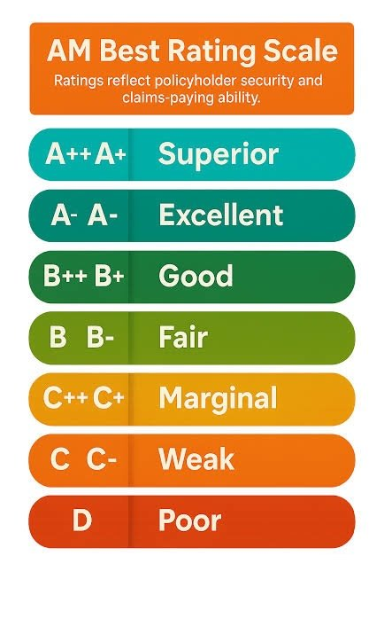

You have the quotes lined up and you have compared the forms. There is one question left, and it is the one buyers skip: who is this company, and what happens when you actually need them?
An insurance policy is a promise to pay later. The premium gets priced today, the promise gets tested on the worst day you will ever have with the boat, and by then your leverage is gone. Fifteen minutes of research before you bind is worth more than any conversation you get to have afterward. Here is what I tell buyers to look at. I am a broker, not an insurance agent and not an attorney, so your agent and your own reading of the policy are the final authority.
First: admitted or surplus lines?
Ask this out loud, because it changes the ground rules and most buyers have never heard the terms.
An admitted carrier is licensed by the state, files its forms and rates with regulators, and in Florida is backed by the Florida Insurance Guaranty Association if it fails. A surplus lines or non-admitted carrier is not licensed the same way. It is permitted to write risks the standard market will not take, using its own forms at its own rates, and it is not backed by the state guaranty fund. If a surplus lines carrier becomes insolvent, there is no state backstop behind your claim.
That is not a reason to avoid surplus lines. A large share of Florida yacht coverage is written there, especially on bigger boats, older boats, and anything with a serious storm exposure, because that is where the appetite is. Some of the best marine underwriters in the world sit on that side of the line. But it changes your homework in two ways. The carrier's own financial strength matters more, because there is no net under it. And the policy wording is not standardized, so two surplus lines quotes on the same boat can contain genuinely different promises. Read the form, never assume it.
Check the financial strength rating yourself

A few things to know. Ratings run from A++ down, and the letter is usually paired with a Roman numeral financial size category, which is why you see requirements written as something like "A- VII or better." That phrasing is not an accident. If you are financing, your lender will almost certainly impose a minimum rating on your carrier, so confirm the rating before you fall in love with a quote or the loan will drag the insurance decision back open at the worst moment. Coverage placed at Lloyd's is rated at the market level rather than syndicate by syndicate, so ask your agent to explain the structure behind a Lloyd's placement rather than assuming it maps to one company. And check the rating outlook, not just the letter. A stable A- and a negative-outlook A- are not the same signal, and a mid-term downgrade can put you out of compliance with your loan.
Verify the licenses
Two checks, both quick and both free.
The agent. The Florida Department of Financial Services maintains a public licensee search. Confirm your agent holds a current license, see which license types they hold, and see whether there is disciplinary history. If your coverage is going to a non-admitted market, the placing agent needs surplus lines authority, so look for it.
The carrier. Admitted carriers can be confirmed through the Florida Office of Insurance Regulation. Surplus lines carriers doing business here run through the Florida Surplus Lines Service Office, which maintains the list of eligible non-admitted insurers. If a carrier is not on the relevant list, that is a hard stop and a conversation with your agent.
Is marine a real line for them, or an accessory?
Plenty of companies will happily sell you a boat policy. Fewer are built for it. Ask these, and note that the answers tell you something regardless of what they are. Do you write yachts in this size range as core business, or as an add-on to a homeowner book? Are claims adjusted in-house by marine adjusters, or handed to a third-party administrator? Who is the adjuster who would handle a Florida loss, and where are they based? Do you have relationships with salvors and yards on this coast? Is there a 24-hour claims line that reaches a human who understands a boat aground rather than a fender bender?
Marine claims are not auto claims. Salvage decisions get made in hours, and the gap between an adjuster who authorizes a tow immediately and one who needs three days of approvals can be the gap between a repair and a total loss.
"Ask the people who watch the outcomes. Your surveyor, your yard manager and your marina know which carriers pay and which ones fight, because they see it happen every week."Clark Haley, Haley Yachts
The best claims research is local and free
Published complaint data exists and is worth a look. The NAIC publishes complaint index information on many carriers, and Florida's Division of Consumer Services handles complaints against admitted insurers. Know the limits, though: surplus lines carriers sit outside much of that machinery, so a thin public record tells you very little.
So go around it. The people who see claim outcomes on Florida boats every week are surveyors, yard and service managers, dockmasters and salvage operators. They have watched carriers pay quickly, watched carriers argue over depreciation for months, and watched policies get voided over paperwork. Ask three of them which companies they see behaving well. That beats any online review and costs you nothing but the question.
Ask your agent directly too: when this carrier had a claim on a boat like mine, what happened? A specialist who has placed marine business for years knows exactly which of their markets are pleasant at claim time. Whether they answer candidly tells you something about the agent.
Read the actual form before you bind
Ask for the specimen policy, not the quote summary. Quote summaries advertise, forms govern. You are looking for every place the policy imposes an obligation on you: safety equipment certification intervals, survey requirements, storm plan and haul-out duties, navigation and lay-up limits, captain or crew requirements, mooring line specifications, maintenance conditions.
Those clauses are called warranties, and in marine insurance they carry unusual weight. Breaching one can give an insurer grounds to challenge the entire policy, and there is a live run of recent Florida cases where carriers moved to void coverage over things like expired fire extinguisher tags that had nothing to do with the loss. For the purposes of picking a company the point is narrow: a carrier whose form is stuffed with tight, unusual warranties has left itself more ways out, and that belongs in your decision alongside the premium. If a clause is unclear, get the interpretation in writing before you bind. After a loss is the worst possible time to learn what a sentence means.
Will they still be here after the storm?
A specifically Florida question. Markets enter and exit this state on a cycle, and a hard hurricane season is followed by non-renewals, tightened terms and outright withdrawals. Ask your agent which of the markets they are quoting have written Florida hull continuously through the last several seasons, and which showed up recently. A carrier that stayed through bad years has demonstrated something a rating alone will not show you.
The agent is half of what you are buying
The carrier pays the claim, but the agent builds the submission, sets the value, spots the warranty that does not fit how you use the boat, and advocates for you when a claim gets complicated. A great agent with a good market beats a mediocre agent with a great market almost every time. Judge them on the questions they ask you. If nobody has asked about your boating experience, your storm plan or your intended cruising range, they are not underwriting you carefully, and a file that thin has a way of coming apart later.
This is the last step in a sequence. Understand what your particular hull does to a submission, especially on an older boat. Run the bid properly so you are comparing real alternatives, covered in getting competitive boat insurance bids. Then pick the company you want standing behind you, using the Florida fundamentals in insuring a yacht in Florida as your baseline.
If you are working through coverage on a boat you are buying and want a second set of eyes before you bind, let's talk. Reach out to Clark Haley at Haley Yachts and I will connect you with marine insurance specialists who explain the form rather than gloss over it, and make sure the policy fits the way you actually plan to use her.